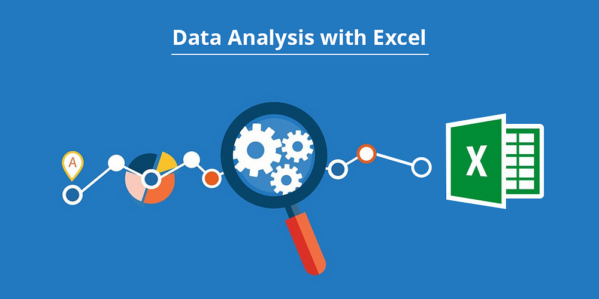

In this project, I removed duplicate entries, standardized date formats, and handled missing values through imputation or deletion. I also ensured consistency in categorical data and optimized the dataset for analysis by addressing data quality issues.

In Telecom Churn Data Analysis project, I removed duplicate entries, standardized date formats, and handled missing values through imputation or deletion. I also ensured consistency in categorical data and optimized the dataset for analysis by addressing data quality issues.

In this Credit card financial dashboard project, I created a financial dashboard using Power BI to analyze credit card transactions. I visualized key metrics like total revenue, transaction counts, and interest earned across different customer segments, including age groups, income levels, and card types. The dashboard provided insights into spending patterns by expenditure type, usage of card features like chip or swipe, and highlighted high-revenue customer demographics, helping to identify trends and improve financial decision-making.

In this Coffee Shop Data Analysis project, I created a Coffee Shop Sales dashboard in Excel to visualize key metrics such as total sales, footfall, average bill per person, and order sizes. The report highlights sales trends based on time, product categories, and store locations. It also provides insights into the most popular products and sales distribution across different sizes and days of the week, helping to identify peak hours and optimize store performance.
{kind=link}